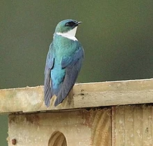
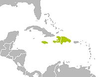
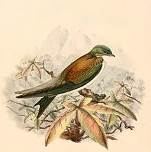
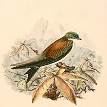
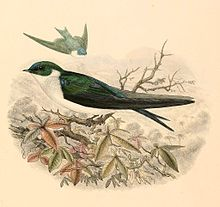
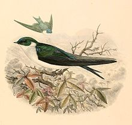
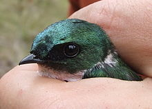
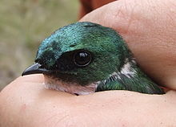

Golden swallow
The golden swallow (Tachycineta euchrysea) is a passerine in the swallow family, Hirundinidae. Two subspecies are recognised, the Jamaican T. e. euchrysea and T. e. sclateri of Hispaniola (Haiti and the Dominican Republic). It usually inhabits the hills on the interior of islands, preferring open country. Currently, this swallow is restricted to isolated montane forests that primarily consist of the Hispaniolan pine. This species is considered to be a vulnerable species by the International Union for Conservation of Nature (IUCN), although the nominate subspecies, T. e. euchrysea, is likely extinct. The exact cause of extinction is unknown, but likely factors include predation by mammals and habitat loss, although the habitat loss theory is not supported by very much evidence. The last sighting of the nominate subspecies was in Hardwar Gap (located on the boundary between Saint Andrew and Portland parishes), with three birds being seen on 8 June 1989.
| Golden swallow | |
|---|---|
|  | |
| Adult of the subspecies sclateri perching on a nest box | |
| Scientific classification | |
| Kingdom: | Animalia |
| Phylum: | Chordata |
| Class: | Aves |
| Order: | Passeriformes |
| Family: | Hirundinidae |
| Genus: | Tachycineta |
| Species: | T. euchrysea
|
| Binomial name | |
| Tachycineta euchrysea (Gosse, 1847)
| |
|  | |
| Range (yellow) | |
| Synonyms | |
|
Hirundo sclateri Cory, 1884 | |
A relatively small swallow, the nominate subspecies has bronze upperparts and bronze sides of the head. The ears and lores are duller and the forehead area is more green than bronze. The shoulders, back, rump, and uppertail-coverts are, on the other hand, a coppery-bronze colour. The lesser and median coverts are more coppery, with the greater and primary-wing-coverts being more of a dusky green. The primaries, secondaries, and tail are a dusky bronze-green. The underparts are mostly white. The legs, feet, and irides are dark brown, and the bill is black. The female is similar but with its breast, and occasionally throat and undertail-coverts, being mottled grey-brown. The juvenile is also mottled-grey brown, in addition to it being duller overall. The extant subspecies, T. e. sclateri, is primarily differentiated by its more deeply forked tail, blue-green forehead and uppertail-coverts, and blue-black wings and tail.
In Hispaniola, this swallow breeds from April to July, where it lays a clutch consisting of two to four white eggs. It formerly bred from June to July in Jamaica. The eggs are laid in a cup nest that is mainly found in Hispaniolan pine. It also nests in caves, under the eaves of houses, in burned stands, and in nest boxes. This swallow is an aerial insectivore, foraging for insects at heights that are usually under 20 m (66 ft), and very rarely at heights over 30 m (98 ft). When foraging, it is known to explore most habitats except forests.
Taxonomy and etymologyEdit
The golden swallow was first described as Hirundo euchrysea by English naturalist Henry Gosse, in his 1847 book The Birds of Jamaica,[2] many years after European settlement of the island. Early naturalists were not aware of this species.[3] The current genus Tachycineta, on the other hand, was originally described in 1850 by the ornithologist Jean Cabanis.[4] The binomial name is from Ancient Greek. Tachycineta is from takhukinetos, "moving quickly", and the specific euchrysea is from eukhrusos, meaning "rich in gold". This is derived from eu, meaning "plenty", and khruseios, meaning "golden".[5]
This species has two subspecies; the second, Tachycineta euchrysea sclateri, was originally suspected of being distinct by Henry Bryant in 1866, who recorded it as "var. dominicensis?" and noted differences in plumage from the nominate subspecies. However, his report lacked a species description.[6] It was finally described as Hirundo sclateri in 1884 by American ornithologist Charles Cory,[7] who felt it distinct enough to warrant separate species status.[8] The subspecies name sclateri is dedicated to Philip Sclater, an English zoologist.[9] The nominate subspecies, T. e. euchrysea, is likely extinct.[1]
This swallow, along with the violet-green swallow and Bahama swallow, comprise a clade. It is also considered to be of the subgenus Tachycineta, the nominate subgenus, in addition to the violet-green swallow, Bahama swallow, and tree swallow.[10]
DescriptionEdit
 
A small swallow, the golden swallow measures, on average, 12 cm (4.7 in). The adult of the nominate subspecies' upperparts, including the sides of the head, the cheek, and the chin, are an iridescent bronze. The ear coverts and lores are duller, and the forehead, crown, and nape are more green. This contrasts with the golden or coppery-bronze colouring of the mantle, shoulders, back, rump, and uppertail-coverts. The lesser and median-coverts are more coppery, with the greater and primary wing-coverts being more green and dusky. The edges of the greater coverts and tertials are more golden. The primaries, secondaries, tail, axillaries, and underwing-coverts are dusky bronze-green, with the axillaries and underwing-coverts having this colour only on the edges. The tail is only slightly forked on the nominate subspecies, unlike the more deeply forked tail of the other subspecies, sclateri. Its underparts are white, with dusky bronze streaks on the flanks. The legs and the feet are dark brown and the bill is black. Its irides are also dark brown. The female is similar, although some of the underparts, specifically the breast and occasionally the throat and undertail-coverts, are mottled grey-brown.[11] The mottling around the breast and collar is likely to decrease over time.[12] The juvenile, like the female, is mottled grey-brown. The juvenile also has less glossy plumage and the sides of its head are a dusky grey.[11]
 
The other subspecies, sclateri, has slightly longer wings and a smaller bill. The plumage is less golden, with the forehead and uppertail-coverts being blue-green, and with both the wings and tail being blue-black.[11] The underparts of T. e. sclateri also vary in being pure white without streaks.[13]
This bird has a soft, two-note call, often described as a tchee-weet, that is repeated.[1][11]
Distribution and habitatEdit
The golden swallow is native to the islands of Hispaniola and Jamaica, although the sole subspecies that resides in Jamaica, Tachycineta euchrysea euchrysea, is likely extinct. It is found up to elevations of 2,000 m (6,600 ft), from sea-level in Jamaica, and from 800 m (2,600 ft) in Hispaniola.[1] It is likely that this species, when not breeding, moves down to lower altitudes.[11] The estimated extent of occurrence for this swallow is 8,100 km2 (3,100 sq mi).[1] Primarily inhabiting hills of the interior of islands, this swallow prefers open country, but will occasionally be seen in forests and over towns.[11] It is restricted to patches of montane forest that consists primarily of Hispaniolan pine.[12] Never common in Jamaica, it was restricted to mountainous limestone country in the island's interior.[3]
BehaviourEdit
BreedingEdit
The golden swallow usually builds its deep cup nest in dead snags, especially those of the Hispaniolan pine, in holes created by woodpeckers,[11] primarily the Hispaniolan woodpecker. It also nests in caves, under the eaves of houses, and in recently burned stands.[14] The nests are made with fine vegetable fibres like silk, cotton, and pappus, with the seeds being broken off from the fibres. The nests are lined with cotton, silk, and feathers. One nest had a diameter of about 12 cm (4.7 in), and a depth of about 5 cm (2.0 in).[11][12]
The breeding season occurs from June to July in Jamaica, and from April to July in Hispaniola.[11] When breeding, the golden swallow usually nests in pairs and occasionally will nest in colonies.[14] This swallow is not known to compete for nests with any other birds. The only species, an insect, that is known to inhabit nest boxes occupied by golden swallows is Polyancistrus loripes, a species of katydid. Only about 9.6% of nesting attempts are second nesting attempts, although this number may be low.[12]
The clutch of this swallow is two to four white to creamy white eggs with little spotting.[14] The eggs measure around 18.4 mm × 13.1 mm (0.72 in × 0.52 in), and weigh 1.7 g (0.060 oz) on average. They are generally laid one per day, although there are instances of the female skipping a day in laying. The incubation period ranges from 17 to 20 days, with the female incubating the young. The young usually fledge 24 to 27 days after they hatch.[12]
DietEdit
This species is an aerial insectivore,[11] usually feeding on flies, Hemiptera (or true bugs), and various other insects. It usually can be seen to forage low to the ground, either by itself or in small groups.[11] It is not usually found to forage above 20 m (66 ft), and very rarely above 30 m (98 ft). Black swifts flying below 20 m (66 ft) are frequently found near golden swallows when the swallows are foraging. It is known to forage in most habitats except the forest. Generally, the golden swallow starts to forage at dawn, with activity increasing in the morning and decreasing during the afternoon.[12]
PredatorsEdit
The golden swallow is victim to various mammalian nest predators, including the introduced Indian mongoose, feral cats, and multiple species of rats.[14] These predators are thought to be linked to the extinction of the nominate subspecies.[3] Nests on or near the ground in mines are especially vulnerable.[14]
StatusEdit
 
{kind=link}
{kind=link}
The golden swallow is considered to be a vulnerable species by the IUCN. This status is on account of the small, fragmented, and decreasing population and range. The nominate subspecies is presumed to be extinct, possibly because of habitat loss and predation. The remaining T. e. sclateri population is declining, mostly due to shifting agriculture and predation by introduced mammalian species.[15] The population is estimated to be anywhere from 1,500 to 7,000 mature birds, in an area estimated to be 8,100 km2 (3,100 sq mi).[1]
This swallow is legally protected in Jamaica,[11] although it is presumed to be extinct there.[1] Not known to the early settlers on the island,[3] it was considered to be common in the 1800s, but it declined and eventually became rare in the 1890s. In the last half of the 1900s, it was restricted to the area of Cockpit Country east to the Blue Mountains.[15] The last specimens collected were a pair from Portland Parish on 9 August 1908; the last confirmed sighting was in the Blue Mountains in 1950. It was regarded as rare from the 1960s to the 1980s, although its precarious status was not realised at the time.[3] In 1987, the last major roosting site of this subspecies was destroyed.[15] Birdwatchers in the Gosse Bird Club reported two probable sightings of several birds on Barbecue Bottom Road in Trelawny Parish in August and September 1982, while the last (and unconfirmed) report is of three birds at Hardwar Gap (located on the boundary between Saint Andrew and Portland parishes) on 8 June 1989.[3]
Curator of Birds Gary R. Graves of the Smithsonian Institution spent 18 years scouring the island for evidence of the taxon without success. He is doubtful of its survival as it is diurnal and Jamaica is a popular destination for birdwatchers. The exact cause of the likely extinction is unknown, but predation by introduced mammals, especially the black rat but possibly also the Indian mongoose, is thought to be a factor. Graves points out that there is little evidence habitat loss has played a role.[3] Graves also added that the swallows adapted to nesting in man-made structures.[3] In general, this swallow is not affected by being near human disturbance.[12] It is proposed that nest boxes be used to counter habitat loss and predation.[14]
ReferencesEdit
- ^ a b c d e f g BirdLife International (2016). "Tachycineta euchrysea". IUCN Red List of Threatened Species. IUCN. 2016: e.T22712086A94318591. Retrieved 2 January 2020.
- ^ Gosse, Philip Henry (1847). The Birds of Jamaica. London: J. Van Voorst. p. 68. Archived from the original on 2017-09-28. Retrieved 2018-01-14.
- ^ a b c d e f g h Graves, Gary R. (2013). "Historical decline and probable extinction of the Jamaican Golden Swallow Tachycineta euchrysea euchrysea". Bird Conservation International. 24 (2): 239–251. doi:10.1017/S095927091300035X. ISSN 0959-2709.
- ^ Cabanis, Jean (1850). Museum Heineanum : Verzeichniss der ornithologischen Sammlung des Oberamtmann Ferdinand Heine auf Gut St. Burchard vor Halberstatdt (in German). 1. Halbertstadt: Independently commissioned by R. Frantz. p. 48. Archived from the original on 2017-10-25. Retrieved 2018-01-14.
- ^ Jobling, James A. (2010). The Helm Dictionary of Scientific Bird Names. London: Christopher Helm. pp. 151, 377. ISBN 978-1-4081-2501-4. Archived from the original on 2019-09-19. Retrieved 2019-11-07.
- ^ Bryant, Henry (1866). "A list of the birds of St. Domingo, with descriptions of some mew species or varieties". Proceedings of the Boston Society of Natural History. 11: 95. Archived from the original on 2017-03-08. Retrieved 2018-02-21.
- ^ Cory, Charles Barney (1884). The Birds of Haiti and San Domingo. Boston: Estes & Lauriat. pp. 45–46. doi:10.5962/bhl.title.87784. Archived from the original on 2017-03-18. Retrieved 2018-02-21.
- ^ Cory, Charles Barney (1884). "Description of several new birds from Santo Domingo". The Auk. 1 (2): 1–4. doi:10.2307/4067266. JSTOR 4067266. Archived from the original on 2017-03-08. Retrieved 2018-02-21.
- ^ Turner, Angela. del Hoyo, Josep; Elliott, Andrew; Sargatal, Jordi; Christie, David A.; de Juana, Eduardo (eds.). "Key to Scientific Names in Ornithology". Handbook of the Birds of the World Alive. Barcelona: Lynx Edicions. Retrieved 3 March 2017.
- ^ Whittingham, Linda A.; Slikas, Beth; Winkler, David W.; Sheldon, Frederick H. (2002). "Phylogeny of the tree swallow genus, Tachycineta (Aves: Hirundinidae), by Bayesian analysis of mitochondrial DNA sequences". Molecular Phylogenetics and Evolution. 22 (3): 430–441. doi:10.1006/mpev.2001.1073. PMID 11884168.
- ^ a b c d e f g h i j k l Turner, Angela (2010). A Handbook to the Swallows and Martins of the World. London: A & C Black. pp. 110–112. ISBN 978-1-4081-3172-5.
- ^ a b c d e f g Proctor, Christopher Justin (2016). Discovering Gold in the Greater Antilles – The Natural History and Breeding Biology of the Hispaniolan Golden Swallow, Followed By the Status of the Critically Endangered Jamaican Golden Swallow (PDF) (Master of Science). Cornell University. Archived (PDF) from the original on 2017-03-18. Retrieved 2017-03-17.
- ^ Ridgway, Robert; Friedmann, Herbert (1904). The birds of North and Middle America: a descriptive catalogue of the higher groups, genera, species, and subspecies of birds known to occur in North America, from the Arctic lands to the Isthmus of Panama, the West Indies and other islands of the Caribbean sea, and the Galapagos Archipelago. Part 3. Washington DC: Smithsonian Museum. pp. 101–102. Archived from the original on 2017-03-18. Retrieved 2018-02-21.
- ^ a b c d e f Townsend, Jason M.; Garrido, Esteban; Mejia, Danilo A. (2008). "Nests and nesting behavior of golden swallow (Tachycineta euchrysea) in abandoned bauxite mines in the Dominican Republic". The Wilson Journal of Ornithology. 120 (4): 867–871. doi:10.1676/08-001.1. ISSN 1559-4491.
- ^ a b c Hume, Julian P.; Walters, Michael (March 19, 2012). Extinct Birds. London: Bloomsbury Publishing. p. 253. ISBN 978-1-4081-5862-3. Archived from the original on February 20, 2017. Retrieved February 19, 2017.
External linksEdit
 Media related to Tachycineta euchrysea at Wikimedia Commons
Media related to Tachycineta euchrysea at Wikimedia Commons Data related to Tachycineta euchrysea at Wikispecies
Data related to Tachycineta euchrysea at Wikispecies- BirdLife Species Factsheet